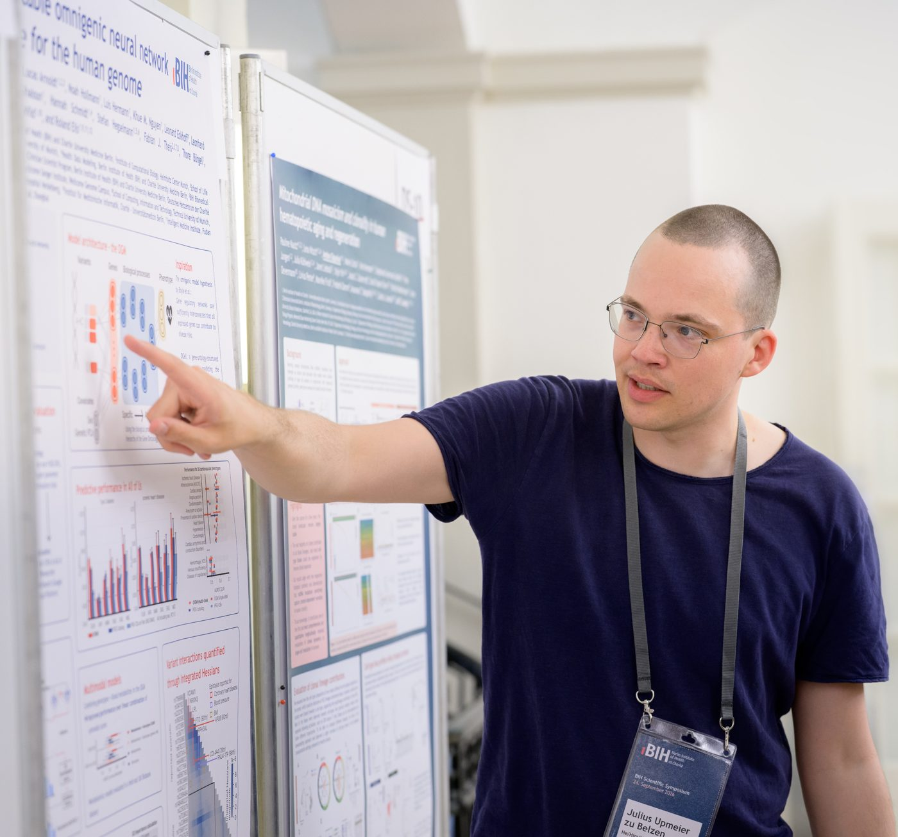
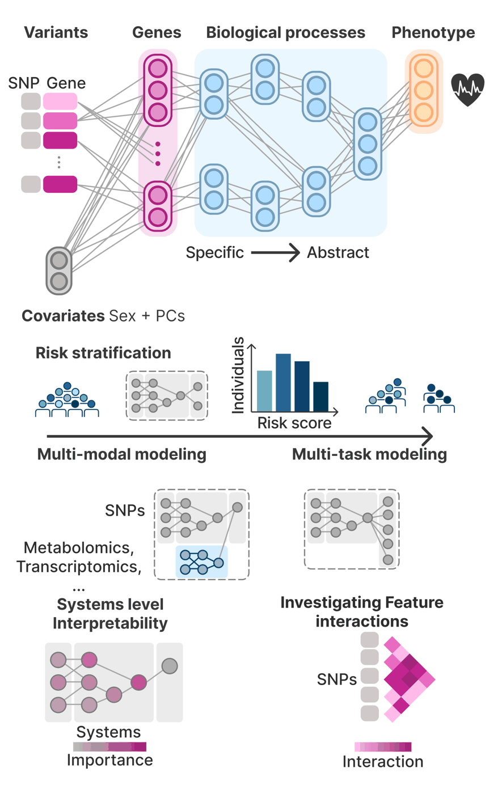

statistical and complex trait genetics, polygenic risk prediction, interpretable deep learning for genomics,
population cohorts (UK Biobank, All of Us), model benchmarking and evaluation, reproducibility
Dr. rer. nat. Julius Upmeier zu Belzen

Postdoctoral researcher at the Berlin Institute of Health at Charité – Universitätsmedizin Berlin, in the Artificial Intelligence group of Roland Eils.
I am interested in machine learning of disease risks to improve our understanding of disease. My doctoral research focused on interpretable neural network architectures to predict risks on individual-level genotypes. In the future, I plan to focus on benchmarking and evaluating disease risk models in population cohorts to improve our understanding of what makes models work well, and improve reproducibility. Additionally, I am interested in multi-omics models, and the shared and complementary contributions of the different modalities to predictive performance.
My doctorate, a Dr. rer. nat. in Bioinformatics, was awarded by the Freie Universität Berlin in 2026 for research carried out in the Artificial Intelligence group of Roland Eils at the Berlin Institute of Health at Charité – Universitätsmedizin Berlin. Before that, I completed a Master of Science and a Bachelor of Science in Molecular Biotechnology at the Ruprecht-Karls-Universität Heidelberg, Germany.
Featured paper
An interpretable omnigenic neural network architecture for the human genome
medRxiv preprint, posted 31 July 2026 · doi:10.64898/2026.07.28.26359187 · github.com/juzb/ogm
Genetic prediction of complex phenotypes typically relies on additive linear models, which scale well but cannot capture non-additive effects or deeply integrate molecular and clinical data. Domain-specific neural networks have driven advances in images, text, and other modalities, but genome-scale neural networks remain challenging because genotypes are sparse and high-dimensional, effective sample sizes are limited, and generic architectures lack interpretability. Here, we introduce the omnigenic neural network, a biologically structured architecture inspired by the omnigenic model of complex traits. The model learns hierarchical representations of biological processes, accommodates multimodal inputs, supports transfer learning, and enables multitask prediction. Models trained in the UK Biobank and evaluated in the All of Us cohort for ischemic heart disease, type 2 diabetes, and schizophrenia outperformed published PGS Catalog and PRS-CSx scores. A multitask model trained across 36 cardiovascular endpoints further outperformed corresponding single-phenotype models and baselines. The architecture provides systems-level interpretability by quantifying the contributions of biological processes, which were consistent with established disease mechanisms. It also captures non-linear interactions between variants. Analysis of these interactions using Integrated Hessians revealed patterns concordant with previously reported epistatic associations. Together, these findings establish the omnigenic neural network as a flexible framework for interpretable, multimodal, and multitask genomic prediction.

Curriculum vitae
Dr. rer. nat. Julius Upmeier zu Belzen
Contact
Interests
Currently
Postdoctoral researcher
Berlin Institute of Health at Charité – Universitätsmedizin Berlin,
Artificial Intelligence group of Roland Eils.
since 2026
Education
Dr. rer. nat. – Bioinformatics, summa cum laude
An interpretable omnigenic neural network architecture for the human genome
Freie Universität Berlin, Fachbereich Mathematik und Informatik,
Berlin Institute of Health at Charité – Universitätsmedizin Berlin. Supervisor: Roland Eils.
2020–2026
Master of Science – Molecular Biotechnology
Specialisation in Bioinformatics. Ruprecht-Karls-Universität Heidelberg.
2018–2020
Bachelor of Science – Molecular Biotechnology
Specialisation in Bioinformatics. Ruprecht-Karls-Universität Heidelberg.
2015–2018
Service
Elected as Chair of the BIH-PhDNet
Co-founded the network to foster scientific exchange among PhD students and strengthen
their representation within the institute.
2025–2026
Reviewer for the Pacific Symposium on Biocomputing 2027. Co-reviewer for the
Conference on Neural Information Processing Systems and Communications Medicine.
since 2024
Coordination of access to the All of Us dataset at Charité.
2024
Co-organisation of the Girls’Day at the BIH-Digital Health Center
One-day internship for girls from age 10 in technical professions.
2024
Co-founding and coordination of the Population Cohorts User Group at Charité:
Monthly forum for collaboration on the use of UK Biobank, All of Us, and similar datasets.
since 2023
Honours
Selection for participation in the Leena Peltonen School of Human Genomics.
2026
Poster prize at the Systems Biology of Human Disease conference, Nashville.
2022
Selection for participation in the 70th and 72nd Lindau Nobel Laureate Meetings.
2020
Selection for participation in the 8th Heidelberg Laureate Forum.
2020
Winner of the Falling Walls Lab Adlershof, science communication in a 3-minute pitch:
Breaking the wall of black boxes in biomedical artificial intelligence.
2019
Scholarship by Stiftung der Deutschen Wirtschaft funded by the German Federal
Ministry of Education and Research.
2016–2020
Teaching
Co-supervision of 7 Bachelor’s thesis projects and 7 Master’s thesis projects at Ruprecht-
Karls-Universität Heidelberg, Freie Universität Berlin, and Humboldt-Universität Berlin.
2020–2026
Co-supervision of 4 projects for software development project internships at Freie
Universität Berlin.
2020–2024
Seminar: Artificial Intelligence in Medicine
Four sessions on interpretable machine learning of protein function at Charité.
2020–2022
Internships
Two months at École Polytechnique Fédérale de Lausanne with Bruno E. Correia.
2018
Two months at BGI-Research in Shenzhen with Zhouchun Shang.
2018
Conferences
Talk: Leena Peltonen School of Human Genomics, Hinxton
An interpretable neural network architecture for the human genome.
2026
Poster: European Society of Human Genetics Conference, Milan
Interpretable neural network polygenic risk scores for common diseases.
2025
Talk: Systems Biology of Human Disease, Berlin
Inference and application of a data-driven gene ontology with cell-type resolution across the body.
2025
Poster: American Society of Human Genetics Conference, Boston
Neural network polygenic scores can improve interpretability and accuracy across cohorts by modelling nonlinear interactions.
2025
Talk: Systems Biology of Human Disease, Berlin
Leveraging implicit knowledge in neural networks for functional dissection and engineering of proteins.
2019
Publications
An interpretable omnigenic neural network architecture for the human genome.
J. Upmeier zu Belzen, L. Arnoldt, N. Hollmann, L. Herrmann, K. Nguyen, L. Eckhoff, L. Kohleick, S. Abou Ghaloun, H. Schmidt, S. Hegselmann, F. Theis, T. Bürgel, J. Steinfeldt, B. Wild, R. Eils. medRxiv:2026.07.28.26359187
2026
T. Bürgel, L. Loock, J. Steinfeldt, N. Kronenberg, L. Hoffmann, S. Künzel, J. Upmeier zu Belzen, L. Arnoldt, A. Khawaja, R. Luben, P. Foster, C. Langenberg, U. Landmesser, J. Deanfield, O. Zeitz, A. Joussen, M. Pietzner, B. Wild, R. Eils. The Lancet Digital Health
2026
Biologically informed variational inference enables interpretable cell phenotyping and discovery.
L. Arnoldt, J. Upmeier zu Belzen, L. Herrmann, K. Nguyen, N. Ishaque, F. Theis, B. Wild, R. Eils. bioRxiv:2025.06.10.657924
2025
J. Steinfeldt, B. Wild, T. Bürgel, M. Pietzner, J. Upmeier zu Belzen, A. Vauvelle, S. Hegselmann, S. Denaxas, H. Hemingway, C. Langenberg, U. Landmesser, J. Deanfield, R. Eils. Nature Communications
2025
An open-source framework for end-to-end analysis of electronic health record data.
L. Heumos, P. Ehmele, T. Treis, J. Upmeier zu Belzen, E. Roellin, L. May, A. Namsaraeva, N. Horlava, V. Shitov, X. Zhang, L. Zappia, R. Knoll, N. Lang, L. Hetzel, I. Virshup, L. Sikkema, F. Curion, R. Eils, H. Schiller, A. Hilgendorff, F. Theis. Nature Medicine
2024
DNA language models identify variants predictive across the human phenome.
B. Wild, J. Upmeier zu Belzen, L. Herrmann, P. Kittner, R. Eils. MLGenX Workshop at the International Conference on Learning Representations
2024
Metabolomic profiles predict individual multidisease outcomes.
T. Bürgel, J. Steinfeldt, G. Ruyoga, M. Pietzner, D. Bizzarri, D. Vojinovic, J. Upmeier zu Belzen, L. Loock, P. Kittner, L. Christmann, N. Hollmann, H. Strangalies, J. Braunger, B. Wild, S. Chiesa, J. Spranger, F. Klostermann, E. van den Akker, S. Trompet, S. Mooijaart, N. Sattar, J. Jukema, B. Lavrijssen, M. Kavousi, M. Ghanbari, M. Ikram, E. Slagboom, M. Kivimaki, C. Langenberg, J. Deanfield, R. Eils, U. Landmesser. Nature Medicine
2022
J. Steinfeldt, T. Bürgel, L. Loock, P. Kittner, G. Ruyoga, J. Upmeier zu Belzen, S. Sasse, H. Strangalies, L. Christmann, N. Hollmann, B. Wolf, B. Ference, J. Deanfield, U. Landmesser, R. Eils. The Lancet Digital Health
2022
M. Hoffmann, J. Mathony, J. Upmeier zu Belzen, Z. Harteveld, S. Aschenbrenner, C. Stengl, D. Grimm, B. Correia, R. Eils, D. Niopek. Nucleic Acids Research
2021
Effects of label noise on deep learning-based skin cancer classification.
A. Hekler, J. Kather, E. Krieghoff-Henning, J. Utikal, F. Meier, F. Gellrich, J. Upmeier zu Belzen, L. French, J. Schlager, K. Ghoreschi, T. Wilhelm, H. Kutzner, C. Berking, M. Heppt, S. Haferkamp, W. Sondermann, D. Schadendorf, B. Schilling, B. Izar, R. Maron, M. Schmitt, S. Fröhling, D. Lipka, T. Brinker. Frontiers in Medicine
2020
Computational design of anti-CRISPR proteins with improved inhibition potency.
J. Mathony, Z. Harteveld, C. Schmelas, J. Upmeier zu Belzen, S. Aschenbrenner, W. Sun, M. Hoffmann, C. Stengl, A. Scheck, S. Georgeon, S. Rosset, Y. Wang, D. Grimm, R. Eils, B. Correia, D. Niopek. Nature Chemical Biology
2020
J. Upmeier zu Belzen, T. Bürgel, S. Holderbach, F. Bubeck, L. Adam, C. Gandor, M. Klein, J. Mathony, P. Pfuderer, L. Platz, M. Przybilla, M. Schwendemann, D. Heid, M. Hoffmann, M. Jendrusch, C. Schmelas, M. Waldhauer, I. Lehmann, D. Niopek, R. Eils. Nature Machine Intelligence
2019